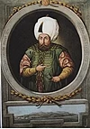
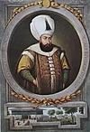
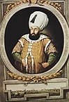

FATİH SULTAN MEHMED
Fatih Sultan Mehmed, 29 Mart 1432’de, Edirne’de doğdu. Babası Sultan İkinci Murad, annesi Humâ Hatun’dur. Fatih Sultan Mehmed, uzun boylu, dolgun yanaklı, kıvrık burunlu, adaleli ve kuvvetli bir yapıya sahipti. Devrinin en büyük âlimlerinden çok iyi eğitim görmüştü; yedi yabancı dil bildiği söylenir. Âlim, şâir ve sanatkârları sık sık toplar ve onlarla sohbet etmekten çok hoşlanırdı. İlginç ve bilinmedik konular hakkında makaleler yazdırır ve bunları incelerdi. Hocalığını da yapmış olan Akşemseddin, Fatih Sultan Mehmed’in en çok değer verdigi âlimlerden biridir. Fatih Sultan Mehmed, gayet soğukkanlı ve cesurdu. Eşsiz bir komutan ve idareciydi. Yapacağı işlerle ilgili olarak en yakınlarına bile hiçbir şey söylemezdi.
Fatih Sultan Mehmed, okumayı çok severdi. Farsça ve Arapça’ya çevrilmiş olan felsefî eserler okurdu. 1466 yılında Batlamyos Haritası’nı yeniden tercüme ettirip, haritadaki adları Arap harfleriyle yazdırdı. Bilimsel sorunlarda, hangi din ve mezhebe mensup olursa olsun bilginleri korur onlara eserler yazdırırdı. Bilime büyük önem veren Fatih Sultan Mehmed, yabancı ülkelerdeki büyük bilginleri İstanbul’a getirtti. Nitekim astronomi bilgini Ali Kuşçu, kendi döneminde İstanbul’a geldi. Ünlü ressam Bellini’yi de İstanbul’a davet ederek kendi resmini yaptırdı.
Fatih Sultan Mehmed, 1481 yılına kadar hükümdarlık yaptı ve bizzat yirmi beş sefere katıldı. Azim ve irade sahibiydi. Temkinli ve verdiği kararları kesinlikle uygulayan bir kişiliği vardı. Devlet yönetiminde oldukça sertti. Savaşlarda çok cesur olur, bozgunu önlemek için ileri atılarak askerleri savaşa teşvik ederdi.
20 yaşında Osmanlı padişahı olan Sultan İkinci Mehmed, İstanbul’u fethedip 1100 yıllık Doğu Roma İmparatorluğu’nu ortadan kaldırarak ‘Fatih’ unvanını aldı. Hz. Muhammed’in Hadis-i Şerifinde müjdelediği İstanbul’un fethini gerçekleştiren büyük komutan olmayı da başaran Fatih Sultan Mehmed, yüksek yeteneği ve dehasıyla dost ve düşmanlarına gücünü kabul ettirmiş bir Türk hükümdarıydı. Ortaçağ’ı kapatıp, Yeniçağ’ı açan cihan hükümdarı Fatih Sultan Mehmed, nikris hastalığından dolayı 3 Mayıs 1481 günü, Maltepe’de vefat etti ve Fatih Camii’nin yanındaki Fatih Türbesi’ne defnedildi. O’nun Roma’yı fethedeceği düşüncesiyle zehirlendiği de kaynaklarda yer almaktadır.

II.BEYAZID
Sultan İkinci Bayezid, 3 Aralık 1448’de, Dimetoka’da doğdu. Babası Fatih Sultan Mehmed, annesi Mükrime Hatun adında bir Türk kızıdır. Uzun boylu, geniş göğüslü ve kuvvetli bir vücuda sahipti. Yüzü yuvarlak ve gözleri elâydı. Cesur ve atılgandı.
Aynı zamanda çok hâlim-selim, dindar, hoşgörülü bir padişahtı. Babası Fatih Sultan Mehmed ilme ilgi duyduğu için, oğlu Şehzade Bayezid’e iyi bir eğitim verdi. Ona devrin en meşhur âlimlerinden ders okutturdu, bütün İslâm ilimlerini en iyi şekilde öğrenmesini sağladı.
Sultan İkinci Bayezid, yedi yaşında iken, Hadim Ali Paşa nezaretinde Amasya valiliğine tayin edildi. Amasya, Selçuklular devrinden beri önemli bir ilim ve kültür merkeziydi. Padişah olacak şehzadelerin yetişmesi için, bu vilayette bütün imkânlar vardı.
Sultan İkinci Bayezid, dindar bir kimse olduğu için kendisine Bayezid-i Velî denildi. Sultan İkinci Bayezid, şairleri saraya toplar, onlarla sohbet ederdi. Merhametli bir padişah olan Sultan İkinci Bayezid, sık sık fakirlere sadaka dağıtırdı.
Arapça ve Farsça’yı gayet iyi biliyordu. Çağatay lehçesi ve Uygur alfabesini de öğrendi. İslâm ilimlerinin yanı sıra, matematik ve felsefe tahsili de yaptı. 24 Nisan 1512’de padişahlıktan ayrılmak zorunda kalan Sultan İkinci Bayezid, bir ay kadar daha yaşadı ve 26 Mayıs 1512’de vefat etti.
Erkek çocukları: Mahmud, Ahmed, Sehinsah, Yavuz Sultan Selim, Mehmed, Korkud, Abdullah, Âlimsah
Kız çocukları: Aynisah, Gevher, Mülük Sultan, Hatice Sultan, Selçuk ve Hüma Hatun.

YAVUZ SULTAN SELİM
Yavuz Sultan Selim, 10 Ekim 1470’de doğdu. Babası Sultan İkinci Bayezid, annesi Gülbahar Hatun’dur. Gülbahar Hatun, Dulkadiroğulları Beyliği’ndendir. Yavuz Sultan Selim, uzun boylu, geniş omuzlu, kalın kemikli, Omuzlarının arası geniş, yuvarlak başlı, kırmızı yüzlü, uzun bıyıklı ve yiğit bir padişahtı. Sert tabiatlı ve cesurdu. İyi bir eğitim gördü.
Babası Sultan İkinci Bayezid, padişah olduktan sonra, askeri sevk ve devlet idareciliğini öğrenmesi için, Şehzade Selim’i Trabzon Sancağına vali olarak tayin etti.
Şehzade Selim, Trabzon’da devlet işlerinin yanında, ilimle uğraşır ve büyük âlim Mevlâna Abdülhalim Efendi’nin derslerini takip ederdi. Trabzon’u çok güzel idare eden Şehzade Selim bu arada komşu devletlerle de ilgilendi.
Valiliği sırasında Trabzon halkını rahat bırakmayan Gürcüler üzerine üç sefer yaptı. En önemlisi olan Kütayis Seferinde Kars, Erzurum ve Artvin illeri ile birçok yeri fethederek Osmanlı topraklarına kattı (1508). Buralarda yaşayan Gürcülerin hepsi Müslüman oldular.
Çok güzel ata biner, devrin en meşhur silahşörlerini alt edecek kadar iyi kılıç kullanırdı. Güreşmekte, ok atmada ve yay çekmede ustaydı. Savaştan hoşlanmakla beraber çok ince bir ruha da sahipti. Mütevazi bir kişiliği olan Yavuz Sultan Selim, her öğün yemekte tek çeşit yemek yerdi ve ağaçtan tabaklar kullanırdı.
Gösterişten hoşlanmaz, devlet malını israf etmezdi. Babasından devraldığı tatminkâr hazineyi ağzına kadar doldurdu. Hazinenin kapısını mühürledikten sonra, şöyle vasiyet etti:
“Benim altınla doldurduğum hazineyi, torunlarımdan her kim doldurabilirse kendi mührü ile mühürlesin, aksi halde Hazine-i Hümayûn benim mührümle mühürlensin“.
Bu vasiyet tutuldu. O tarihten sonra gelen padişahların hiçbiri hazineyi dolduramadığından, hazinenin kapısı daima Yavuz’un mührüyle mühürlendi.
Yavuz Sultan Selim, ataları hep sakal uzattıkları halde sakalını keserdi. Bunun sebebini soranlara “Sakalımı ele vermemek için kesiyorum” dediği rivayet edilir. 22 Eylül 1520’de, “Aslan Pençesi” denilen bir çıban yüzünden henüz elli yaşında iken vefat etti.
Hayatının son dakikalarında Yasin-i Şerif okuyordu. Kanûnî Sultan Süleyman, Fatih Camii’nde babasının cenaze namazını kıldıktan sonra, onu Sultan Selim Camii avlusundaki türbeye defnettirdi. Tarihçiler, Yavuz Sultan Selim’i, sekiz yıla seksen yıllık iş sığdırmış büyük bir padişah olarak değerlendirdiler.
Erkek çocukları: Kanuni Sultan Süleyman
Kız çocukları: Hatice Sultan, Fatma Sultan, Hafsa Sultan, Sah Sultan

KANUNİ SULTAN SÜLEYMAN
Kanûnî Sultan Süleyman, 27 Nisan 1495 Pazartesi günü, Trabzon’da doğdu. Babası Yavuz Sultan Selim, annesi Hafsa Hatun’dur. Hafsa Hatun Türk ya da Çerkezdir. Kanûnî Sultan Süleyman, yuvarlak yüzlü, elâ gözlü, geniş alınlı, uzun boylu ve seyrek sakallıydı.
Kanûnî Sultan Süleyman devri, Türk hakimiyetinin doruk noktasına ulaştığı bir devir olmuştur. Babası Yavuz Sultan Selim, onu küçük yaşlardan itibaren çok titiz bir şekilde yetiştirmeye başladı. Benzeri görülmemiş bir terbiye ve tahsil gördü. İlk eğitimini annesinden ve ninesi Gülbahar Hatun’dan (Yavuz Sultan Selim’in annesi) aldı. Yedi yaşına gelince tahsil için İstanbul’a, dedesi Sultan İkinci Bayezid’in yanına gönderildi; Şehzade Süleyman, burada Kara Kızoğlu Hayreddin Hızır Efendi’den tarih, fen, edebiyat ve din dersleri alırken, savaş teknikleri konusunda da öğrenim görüyordu. On beş yaşına kadar babası Yavuz Sultan Selim’in yanında kalan Şehzade Süleyman, kanunlar gereği sancak istemesi üzerine, önce Şarkî Karahisar’a oradan da Bolu, kısa bir süre sonra da Kefe sancak beyliğine tayin edildi (1509).
Yavuz Sultan Selim’in, 1512 de tahta geçmesi üzerine İstanbul’a çağırılan Şehzade Süleyman, babasının kardeşleriyle mücadeleleri sırasında İstanbul’da kalarak babasına vekâlet etti. Bu sırada Saruhan sancakbeyliğinde de bulundu. Babası Yavuz Sultan Selim’in ölümü üzerine, 30 Eylül 1520’de, yirmi beş yaşındayken Osmanlı tahtına geçti. Kendisinden başka erkek kardeşi olmadığı için tahta geçişi kolay ve çatışmasız oldu. Çok ciddi ve kendinden emin bir padişah olan Kanûnî Sultan Süleyman, azim ve irade sahibiydi. Yapacağı işlerde hiç acele etmez, gayet geniş düşünür ve verdiği emirden asla geri dönmezdi. İş başına getireceği adamlara, kabiliyet derecelerine göre görev verirdi. Sigetvar kuşatmasını idare ederken, 7 Eylül 1566 yılında yetmiş bir yaşında vefat etti.
Kendisine “Kanûnî” denmesi, yeni kanunlar icad etmesinden değil, mevcut kanunları yazdırtıp çok sıkı bir şekilde tatbik etmesinden dolayıdır. Kanûnî Sultan Süleyman, adaleti seven bir padişahtı. Mısır’dan gelen vergiyi haddinden fazla bulup, yaptırdığı araştırma sonunda halkın zulme uğradığını düşünmesi ve Mısır Valisini değiştirmesi bunun açık kanıtıdır.
Kanûnî Sultan Süleyman, tahta çıktığı sırada Osmanlı Devleti dünyanın en zengin ve en güçlü devleti konumundaydı. Babasının ölümü ve kendisinin padişah olması, “Arslan öldü, yerine kuzu geçti” diye düşünen Avrupalıları sevindiriyordu. Ancak Avrupalılar, çok geçmeden hayal kırıklığına uğradılar.
Büyük bir devlet adamı olan Kanûnî Sultan Süleyman aynı zamanda ünlü bir şairdi. Meşhur şiirlerinden birisi şudur:
“Halk içinde muteber bir nesne yok devlet gibi,
Olmaya devlet cihanda, bir nefes sıhhat gibi.
Saltanat dedikleri bir cihan kavgasıdır,
Olmaya baht ü saadet dünyada vahdet gibi”.
Erkek çocukları: İkinci Selim, ,Bayezid, Murad, Mehmed, Mahmud, Cihangir, Mustafa
Kız çocukları: Mihrimah Sultan, Raziye Sultan

II.SELİM
Sultan İkinci Selim, 28 Mayıs 1524’de, İstanbul’da doğdu. Babası Kanûnî Sultan Süleyman, annesi Hürrem Sultan’dır.
Hürrem Sultan, Slav kökenlidir. Sultan İkinci Selim, orta boylu, açık alınlı, mavi gözlü, ince kaslı ve sarışındı. Şehzadeliğinde mükemmel bir tahsil ve terbiye ile yetiştirildi. Devlet idaresini iyice öğrenmek için de Anadolu’nun çeşitli yerlerinde sancakbeyliği yaptı. Bu sırada tahsiline devam ederek, ilim ve tecrübesini arttırdı.
Sarı Selim olarak da anılan İkinci Selim, Kütahya sancakbeyi iken babası Cihan Padişahı Kanûnî Sultan Süleyman’ın ölüm haberi üzerine İstanbul’a gelerek 30 Eylül 1566 günü kırk iki yaşında tahta geçti. Sarı Selim, daha önceki Osmanlı sultanlarına göre silik ve zayıf bir hükümdar olarak tanınır.
Babasının saltanatı sırasında diğer kardeşleri Şehzade Bayezid ve Şehzade Mustafa’nın bertaraf edilmesiyle kolayca tahta geçen Sultan İkinci Selim, adını aldığı dedesi Yavuz Sultan Selim ve Babası Kanûnî’ye göre oldukça silik bir idare sergilemiştir. Devrin büyük devlet adamları sayesinde Osmanlı Devleti ihtişamını sürdürmüş, Sokullu Mehmed Paşa gibi dirayetli ve tecrübeli vezirler hükûmeti ayakta tutmuşlardır. Sultan İkinci Selim’in kendisi hiç sefere çıkmamış ve liyakatlı olmayan Ali Paşa’nın Kaptan-ı Deryalığında İnebahtı faciası yaşanmıştır. Sekiz yıl padişahlık yaptıktan sonra 15 Aralık 1574 günü vefat etti. Ayasofya’ya defnedildi. Sultan İkinci Selim İstanbul’da ölen ilk Osmanlı padişahıdır.
Sultan İkinci Selim’in tahta çıktığı ilk yıllarda, bazı siyasî çekişmeler yaşandı. Sokullu Mehmed Paşa bu çekişmelerden galip olarak ayrıldı ve on beş yıl sadrazamlık yaptı. Sadrazamlık yaptığı bu dönemde devlet yönetimine ağırlığını koydu.
Sultan İkinci Selim, babası Kanûnî Sultan Süleyman’dan 14. 892.000 km2 olarak devraldığı devlet topraklarını, oğlu Sultan Üçüncü Murad’a 15.162.000 km2 olarak bırakmıştır.
İkinci Selim de şair hükümdarlardandı. Şaheser beyitlerinden biri şudur:
“Biz bülbül-i muhrik-i dem-i sekvayi fira Kız
Ateş kesilir geçse saba gülşenimizden”
Erkek çocukları: Üçüncü Murad, Abdullah, Osman, Mustafa, Süleyman, Mehmed, Cihangir.
Kız çocukları: Fatma Sultan, Sah Sultan, Gevherhan Sultan, Esma Sultan.

III.MURAD
Sultan Üçüncü Murad, 4 Temmuz 1546 günü, Manisa’nın Bozdağ Yaylası’nda dünyaya geldi. Babası, Sultan İkinci Selim, annesi Afife Nur Banu Sultan’dır. Annesi Venedikli’dir. Sultan Üçüncü Murad orta boylu, değirmi yüzlü, kumral sakallı, elâ gözlü ve beyaz tenli bir padişahtı. Çok cömertti ve insanlara yardım etmeyi çok severdi.
Merhametli bir kişiliğe sahip olan Sultan Üçüncü Murad, Arapça ve Farsça’yı çok iyi derecede öğrenmişti. Babasının 1558 yılında, Manisa sancak beyliğinden Karaman valiliğine tayin edilmesi üzerine, dedesi Kanûnî Sultan Süleyman tarafından Alaşehir sancak beyliğine tayin edildi. Babası Sultan İkinci Selim, padişah olduktan sonra da tekrar Manisa sancak beyliğine atandı.
Şehzadeliği sırasında bulunduğu Manisa’da devrin en değerli ulemâsından dersler aldı. Osmanlı Padişahları içinde en âlim padişahlardan birisidir. Babası Sultan İkinci Selim’in vefatı üzerine Manisa’dan İstanbul’a gelerek, 22 Aralık 1574 tarihinde tahta geçti. Ancak o da babası Sultan İkinci Selim gibi devlet işlerine fazla müdahil olmadı. Bürokrasi ve hükûmet daha ziyade Sokullu Mehmed Paşa tarafından idare edildi. Bunda Sokullu’nun tecrübe ve dirayeti ile Sultan Üçüncü Murad’ın idare tarzı büyük rol oynamıştır.
Sultan Üçüncü Murad, saltanatı boyunca İstanbul’dan hiç çıkmadı ve saraydaki kadınların etkisinde kaldı. Daha sonraki yıllarda Osmanlı Devleti’nin bir devrini etkileyecek olan kadınlar saltanatı onun devrinde başladı. 29 yaşında çıktığı tahtta yirmi yıl kalan Sultan Üçüncü Murad 16 Ocak 1595 tarihinde felç geçirdi ve vefat etti. Ayasofya Camii’nin avlusuna defnedildi.
Sokullu Mehmed Paşa’nın ağırlığını hissettirdiği III. Murad döneminde, Osmanlı toprakları en geniş sınırlarına ulaştı. Babası İkinci Selim’den devraldığı 15. 162.151 km2 ülke toprağını, 19.902.000 km2’ye çıkardı. İngilizlerle de dostâne ilişkiler geliştirildi.
İlk İngiliz daimî elçisi onun zamanında gönderildi. Papa’nın Katolik Avrupa’da kurabileceği haçlı ittifakına karşı Protestan İngiltere ile ilişkiler geliştirildi. Daha sonra bu ittifaka, Hollanda da dahil edildi. Devlet işlerini Sokullu’ya devreden Sultan Üçüncü Murad zamanında sarayda kadınlar devlet işlerine çokça karışmaya başladılar bu durum, Sokullu’nun ölümünden sonra daha da artarak devam etti.
Erkek çocukları: Üçüncü Mehmed, Selim Bayezid, Mustafa, Osman, Cihangir, Abdullah, Abdurrahman, Abdullah, Hasan, Ahmed, Yakub, Alemsah, Yusuf, Hüseyin , Korkud, Ali, Ishak, Ömer, Alaeddin, Davud.
Kız çocukları: Ayse Sultan, Fatma Sultan, Mihrimah Sultan, Fahriye Sultan.

III.MEHMED
Sultan Üçüncü Mehmed, 26 Mayıs 1566’da, Manisa’da doğdu. Babası Sultan Üçüncü Murad, annesi Safiye Sultan’dır. İsmini, Fatih Sultan Mehmed’e benzemesi için, büyük dedesi Kanûnî Sultan Süleyman koydu. Orta boylu, kumral saçlı ve güzel yüzlüydü. İyi bir ilim tahsili yaptı ve Tâcü’t-Tevârih yazarı Hoca Sadeddin Efendi’den dersler aldı. Sultan Üçüncü Mehmed, 1583’te Manisa sancak beyliğine tayin edildi. 1595 yılının Ocak ayına kadar görev yaptığı Manisa’dan, Babasının ölüm haberi üzerine hareket ederek, 27 Ocak 1595 tarihinde geldiği İstanbul’da, Osmanlı tahtına geçti.
Sultan Üçüncü Mehmed, annesini çok sever, sayar ve dinlerdi. Bundan yararlanan annesi Safiye Sultan, Osmanlı sarayında hâkimiyet kurdu. Bazı konularda Padişahı zorlayıp istediğini yaptırıyor, bu da devlet işlerinde karışıklıklara sebep oluyordu. Dindar olup, tasavvufa da son derece meraklıydı. Hz. Muhammed’in ismi anılınca, saygısından derhal ayağa kalkardı. Üçüncü Mehmed devri, duraklama dönemine rastlar. Sultan Üçüncü Mehmed, kolayca üzüntüye kapılır, yemekten, içmekten kesilirdi. Celâlî isyanları ve İran savaşlarının çok uzun sürmesi onu büyük üzüntü içinde bıraktı. İçkiyi sıkı bir şekilde yasaklayıp, bütün gizli meyhaneleri kapattırdı.
Erkek çocukları: Birinci Ahmed, Birinci Mustafa, Selim, Mahmud